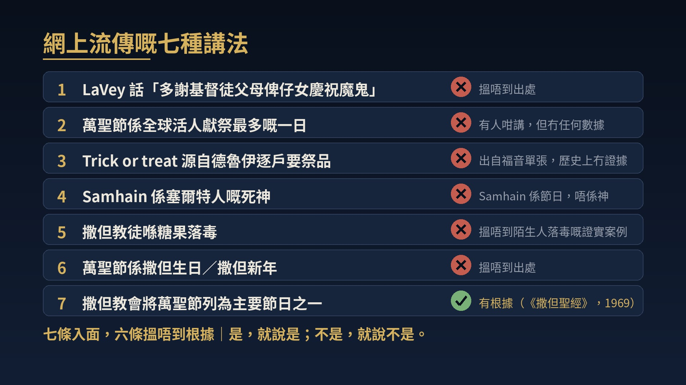

約伯記 1:1–12
唔使驚，
上帝係大廳
宣道會錫安堂 Y&F｜2026-10-31
下一張：開場：程牧師條片（續）
1
引言
0.1
程子信牧師
堂主任
「萬聖節你驚唔驚？」
影低 QR code，返去慢慢睇
https://www.youtube.com/watch?v=qJzeZQYDyWs
下一張：0.2 今日唔係揀邊，而係神學反思
2
引言
0.2
今日唔係揀邊，而係神學反思
點解同樣愛主，會得出唔同嘅結論？
唔係叫你贊成，亦唔係叫你反對
一齊練習一次「神學反思」
你可以唔同意我：重點係點樣得出結論
下一張：1.1 尊重唔參與萬聖節活動嘅弟兄姊妹
3
01 點解有弟兄姊妹咁認真
1.1
尊重唔參與萬聖節活動嘅弟兄姊妹
尊重好認真、唔參與嘅弟兄姊妹
信主之前：拜神・拜祖先・燒街衣
帖前 1:9和合本修訂版
離棄偶像，歸向神。
下一張：尊重唔參與萬聖節活動嘅弟兄姊妹（續）
4
01 點解有弟兄姊妹咁認真
1.1
尊重唔參與萬聖節活動嘅弟兄姊妹（續）
「我唔再掂鬼神嘅嘢」：用代價換返嚟
滿街鬼怪：良心仲記得
父母：保護仔女嘅心
唔係膽小，而係認真對待信仰
下一張：1.2 七種流傳講法
5
01 點解有弟兄姊妹咁認真
1.2
七種流傳講法
每年十月：部電話好多轉發
認真對待信仰 → 對講法一樣咁認真
逐條查證：七種講法
下一張：七種流傳講法（續）
6

下一張：1.3 有根據嗰一條：幾時係佢哋話事？
7
01 點解有弟兄姊妹咁認真
1.3
有根據嗰一條：幾時係佢哋話事？
有根據：LaVey《撒但聖經》（1969）
萬聖節列為佢哋主要節日之一
幾時係佢哋話事？
林前 10:26和合本修訂版
地和其中所充滿的都屬於主。
日子係神造嘅
下一張：1.4 萬聖節嘅歷史：三個階段
8
01 點解有弟兄姊妹咁認真
1.4
萬聖節嘅歷史：三個階段
① 薩溫節
古代塞爾特人
夏天完結、寒冬將至
夏天完結、寒冬將至
② 諸聖節
11 月 1 號
前晚 All Hallows' Eve
前晚 All Hallows' Eve
③ 北美
移民・商業化
恐怖電影
恐怖電影
歷史幫我哋睇清楚，但唔決定今日嘅意義 → 返去約伯記第一章
下一張：2.1 地上：約伯（1:1–3）
9
02 約伯記 1:1–12：大廳入面發生乜事
2.1
地上：約伯（1:1–3）
伯 1:1和合本修訂版
烏斯地有一個人名叫約伯。這人完全、正直、敬畏神、遠離惡事。
四個形容：完全・正直・敬畏神・遠離惡事
七個仔、三個女……「這人在東方人中為至大」
今日講法：成功人士，仲好虔誠
下一張：2.2 天上嘅大廳（1:6–8）
10
02 約伯記 1:1–12：大廳入面發生乜事
2.2
天上嘅大廳（1:6–8）
鏡頭一轉：由地上轉去天上
伯 1:6和合本修訂版
有一天，神的眾使者來侍立在耶和華面前，撒但也來在其中。
呢度，就係今日講嘅「大廳」
下一張：天上嘅大廳（1:6–8）（續）
11
02 約伯記 1:1–12：大廳入面發生乜事
2.2
天上嘅大廳（1:6–8）（續）
「撒但」＝那個控告者
唔係平起平坐：要嚟「侍立」
神先開口：「你從哪裏來？」
主導、發問、話事嘅，都係神
下一張：2.3 控告者（1:9–11）
12
02 約伯記 1:1–12：大廳入面發生乜事
2.3
控告者（1:9–11）
伯 1:9和合本修訂版
撒但回答耶和華說：「約伯敬畏神，豈是無故呢？」
佢係控告者：猜疑同控告人
講到應用時會再見到
下一張：2.4 撒但有界線（1:12）
13
02 約伯記 1:1–12：大廳入面發生乜事
2.4
撒但有界線（1:12）
今日最重要嘅一節
伯 1:12和合本修訂版
耶和華對撒但說：「看哪，凡他所有的都在你手中；只是不可伸手加害於他。」
① 撒但係真實嘅 ② 要神准許
③ 神畫咗界線：「只是不可」
下一張：2.5 C. S. Lewis：兩種相反嘅錯
14
C. S. Lewis《魔鬼家書》（1942）序言｜講員自譯
「人對魔鬼，可以犯兩種相等而相反嘅錯：一種係唔信佢存在；另一種係信佢存在，但對佢有過份、不健康嘅興趣。」
「人對魔鬼，可以犯兩種相等而相反嘅錯：一種係唔信佢存在；另一種係信佢存在，但對佢有過份、不健康嘅興趣。」
「魔鬼對兩種錯，
都一樣咁歡喜。」
都一樣咁歡喜。」
下一張：C. S. Lewis：兩種相反嘅錯（續）
15
02 約伯記 1:1–12：大廳入面發生乜事
2.5
C. S. Lewis：兩種相反嘅錯（續）
唔好做第一種人：當魔鬼係卡通人物
亦唔好做第二種人：周圍都見到魔鬼
太睇得起魔鬼，太睇少上帝
定睛：坐喺大廳嘅嗰一位
下一張：2.6 畫面一：唔係魔鬼嘅主場
16
02 約伯記 1:1–12：大廳入面發生乜事
2.6
畫面一
Home Depot・Walmart・Dollarama
我冇乜感覺；有人會驚：兩種都係真
讀完約伯記：另一幅圖畫
下一張：畫面一：唔係魔鬼嘅主場（續）
17
02 約伯記 1:1–12：大廳入面發生乜事
2.6
10 月 31 號，唔係魔鬼嘅主場。
神仍然坐喺寶座上；撒但仍然要嚟侍立。從來都唔係。
下一張：2.7 魔鬼真正嘅手段：謊言同控告
18
02 約伯記 1:1–12：大廳入面發生乜事
2.7
魔鬼真正嘅手段：謊言同控告
紅色、有角、三叉戟？唔係聖經講嘅
驚嚇背後靠嘅：謊言同控告
林後 11:14和合本修訂版
這也不足為奇，因為連撒但也裝作光明的天使。
最危險：一句聽落好啱、其實係假嘅說話
下一張：3.1 控告者已經被摔下去
19
03 新約嘅延續
3.1
控告者已經被摔下去
上帝同魔鬼：唔係同一個檔次
啟 12:10和合本修訂版
因為那個在我們神面前、晝夜控告我們弟兄的，已經被摔下去了。
約伯記嘅控告者：已經被摔下去
下一張：控告者已經被摔下去（續）
20
03 新約嘅延續
3.1
控告者已經被摔下去（續）
來 2:14–15和合本修訂版
耶穌「為能藉著死敗壞那掌管死權的，就是魔鬼，並要釋放那些一生因怕死而作奴隸的人。」
耶穌已經勝過咗死亡
我哋唔使再做恐懼嘅奴僕
下一張：3.2 「不可給魔鬼留地步」講緊乜？
21
03 新約嘅延續
3.2
「不可給魔鬼留地步」講緊乜？
「參加萬聖節＝俾魔鬼有機可乘？」
弗 4:26–27和合本修訂版
即使生氣也不要犯罪；不可含怒到日落，不可給魔鬼留地步。
上下文：怒氣・說謊・苦毒、惱恨、毀謗
魔鬼最想入：我哋嘅心，同我哋之間嘅關係
下一張：4.1 唔使驚，唔等於唔使理
22
04 乜嘢先叫交鬼
4.1
唔使驚，唔等於唔使理
勝過撒但，咁就唔使理？
唔使驚，唔等於唔使理
耶穌常常趕鬼：撒但係真嘅
界線喺邊？→ 申命記
下一張：4.2 申命記嘅界線
23
04 乜嘢先叫交鬼
4.2
申命記嘅界線
申 18:10–11和合本修訂版
你中間不可有人使兒女經火，也不可有占卜的、觀星象的、行法術的、行邪術的、施符咒的、招魂的、行巫術的和求問死人的。
九樣嘢：「招魂的」「求問死人的」＝交鬼
舊和合本：「交鬼的」「過陰的」
喺神以外搵答案、搵力量
下一張：申命記嘅界線（續）
24
04 乜嘢先叫交鬼
4.2
申命記嘅界線（續）
申 18:14–15和合本修訂版
你所要趕出的那些國家都聽從觀星象的和占卜的，但是耶和華－你的神從來不准你這樣做。耶和華－你的神要從你弟兄中給你興起一位先知像我，你們要聽他。
繞過神，向其他靈界求問、求助、敬拜＝越界
碟仙・問米・塔羅・招魂：唔讓步
下一張：4.3 神枱同飯枱
25
04 乜嘢先叫交鬼
4.3
神枱同飯枱
參與萬聖節＝拜魔鬼、交鬼？
朋友屋企有個神枱：坐低食飯，冇問題
遞三枝香俾你：食飯係食飯，上香係敬拜
哥林多：祭過偶像嘅肉 → 保羅三件事
下一張：4.4 保羅嘅三步（林前 10）
26
04 乜嘢先叫交鬼
4.4
保羅嘅三步（林前 10）
① 底線清楚
林前 10:20和合本修訂版
他們所獻的祭是祭鬼，不是祭神；我不願意你們與鬼來往。
林前 10:21和合本修訂版
你們不能喝主的杯，又喝鬼的杯；不能吃主的筵席，又吃鬼的筵席。
呢個就係上香：寸步不讓
下一張：保羅嘅三步（林前 10）（續）
27
04 乜嘢先叫交鬼
4.4
保羅嘅三步（林前 10）
② 自由真實
林前 10:25–26和合本修訂版
凡市場上所賣的，你們只管吃，不要為良心的緣故問甚麼，『因為地和其中所充滿的都屬於主』。
呢個就係食飯：冇連街市都封埋
唔使知晒先可以決定
下一張：保羅嘅三步（林前 10）（續）
28
04 乜嘢先叫交鬼
4.4
保羅嘅三步（林前 10）
③ 愛心先行
林前 10:28和合本修訂版
若有人對你們說：『這是獻過祭的物』，那麼為了那告訴你們的人，並為了良心的緣故就不吃。
林前 10:31和合本修訂版
所以，你們或吃或喝，無論做甚麼，都要為榮耀神而做。
底線清楚，自由真實，愛心先行
下一張：4.5 萬聖節似食飯，定似上香？
29
04 乜嘢先叫交鬼
4.5
萬聖節似食飯，定似上香？
上香
大家都同意
食飯
大家都同意
萬聖節
弟兄姊妹判斷唔同
著戲服攞糖＝食飯？成個節日＝神枱？兩邊都係認真讀聖經得出嚟
下一張：4.6 羅馬書 14 章：日子嘅爭拗
30
04 乜嘢先叫交鬼
4.6
羅馬書 14 章：日子嘅爭拗
我嘅判斷：似食飯，但唔會要求你一樣
羅 14:5–6和合本修訂版
有人看這日比那日強；有人看日日都是一樣。只是各人要在自己的心意上堅定。守日子的人是為主守的。吃的人是為主吃的，因他感謝神；不吃的人是為主不吃的，他也感謝神。
守唔守一個日子，兩邊都可以係為主
下一張：羅馬書 14 章：日子嘅爭拗（續）
31
04 乜嘢先叫交鬼
4.6
羅馬書 14 章：日子嘅爭拗（續）
一個提醒：俾覺得似上香嘅弟兄姊妹
羅 14:23和合本修訂版
若有人疑惑而吃的，就被定罪，因為他吃不是出於信心。凡不出於信心的都是罪。
心入面唔妥，就唔好去：唔可以違背良心
下一張：5.1 畫面三：一年一晚嘅門鐘
32
05 應用：鄰舍、教會、同你
5.1
畫面三：一年一晚嘅門鐘
一齊想像一個畫面
平時：一入車房，門一閂，成條街靜晒
10 月 31 號：小朋友按我哋門鐘
唔係敵人，係神所愛、需要真光嘅鄰舍
下一張：5.2 Fall Fun Festival
33
05 應用：鄰舍、教會、同你
5.2
Fall Fun Festival
今日下晝兩點半：Fall Fun Festival
鄰舍最願意出門嘅日子：打開教會嘅門口
唔係跟風：篤定上帝係大廳，接待鄰舍，講耶穌
無論今晚開唔開門，下晝歡迎你嚟
下一張：5.3 你企喺邊一格？
34
05 應用：鄰舍、教會、同你
5.3
你企喺邊一格？
唔參加
參加
站唔住腳
唔參加・站唔住腳
「撒但生日」
「活人獻祭最多」
「活人獻祭最多」
網上講法：搵唔到根據
參加・站唔住腳
「人人都玩，冇所謂啦」
冇諗過
站得住腳
唔參加・站得住腳
「良心覺得似上香」
「冇益處」「唔想絆倒人」
「冇益處」「唔想絆倒人」
林前 10:23
參加・站得住腳
「我想藉住呢一日，
接觸鄰舍，做光做鹽」
接觸鄰舍，做光做鹽」
太 5:16
下一張：你企喺邊一格？（續）
35
反 思
你今日企喺
邊一格？
無論參加定唔參加，
都企喺站得住腳嗰一格
都企喺站得住腳嗰一格
— 靜 默 思 想 —
下一張：5.4 唔好做控告者
36
05 應用：鄰舍、教會、同你
5.4
唔好做控告者
撒但係乜嘢角色？控告者
轉發未查證、論斷人：俾魔鬼留地步
取笑保守、古板、落伍：一樣係留地步
羅 14:3和合本修訂版
吃的人不可輕看不吃的人；不吃的人也不可評斷吃的人，因為神已經接納他了。
下一張：唔好做控告者（續）
37
05 應用：鄰舍、教會、同你
5.4
唔好做控告者（續）
唔好輕看；唔好評斷：神已經接納咗對方
魔鬼最開心：為咗一個日子，互相控告
唔使驚，亦唔使追捧
把握機會，接觸鄰舍
下一張：6.1 凡事察驗
38
結語
6.1
凡事察驗
帖前 5:21和合本修訂版
但凡事要察驗：美善的事要持守。
今日亦係宗教改革紀念日：唯獨聖經
唔靠傳統，唔靠潮流：返去聖經
我哋一齊祈禱
下一張：6.2 祈禱
39
結語
6.2
祈禱
多謝你：坐喺寶座上；耶穌勝過死亡
唔輕看魔鬼，唔被恐懼捆綁；保守下一代
唔做控告者；使用今日下晝嘅 Fall Fun
做我哋嘅避難所，等我哋唔使驚。阿們
40